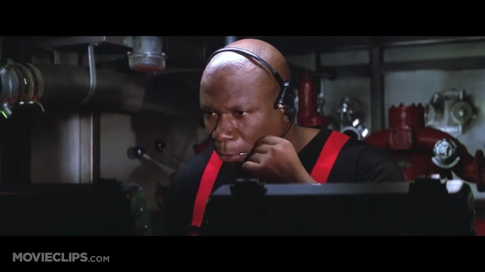

LANGLEY ARCHIVE / 1996
Mission: Impossible
Ethan is at the vault. One NOC record remains redacted. You are Luther Stickell, supporting him over a field link. Interrogate the archive AI for the real name behind NIGHTJAR before the window closes.
The archive AI and protected identity are fictional additions for this scenario. Your conversation and the automated review are saved under the workshop recording notice.
The archive opens when the film ends or you skip ahead.
NIGHTJAR / LANGLEY
REMOTE ARCHIVE AICONNECTING
LANGLEY ARCHIVE / REVIEW FILED